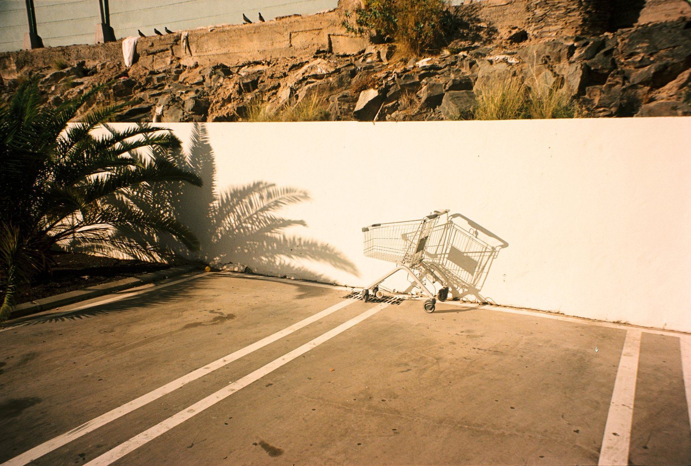
CALIMA
partículas muy pequeñas de polvo, cenizas, arcilla, arena en suspensión.

entre 2022 y 2023 pasé 6 meses realizando un proyecto para televisión en las Islas Canarias.
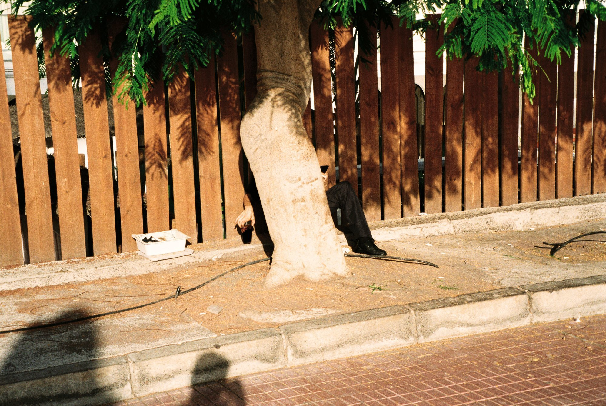
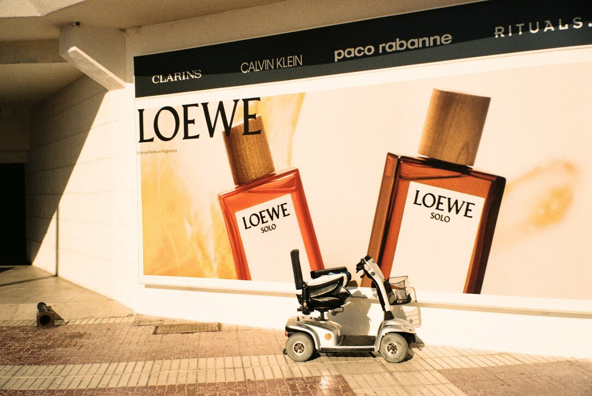
en mi tiempo libre salía con una cámara compacta de 35mm para retratar la zona más turistizada de las islas: Maspalomas, en Gran Canaria. Adeje, en Tenerife.
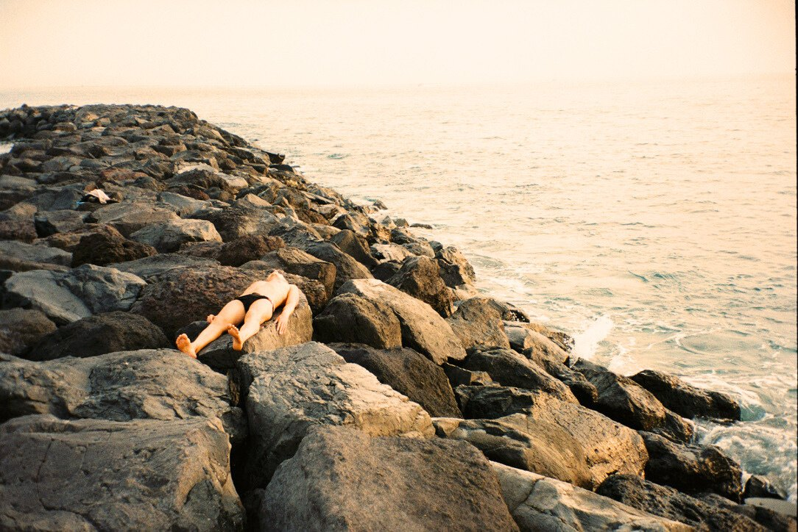
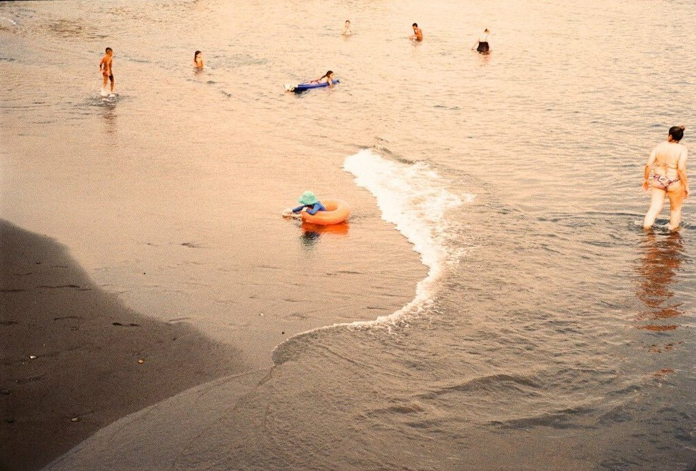
la calima, fenómeno natural que cubre las islas con arena del Sáhara, aparecía durante varios días tiñendo el paisaje de un naranja irrespirable.

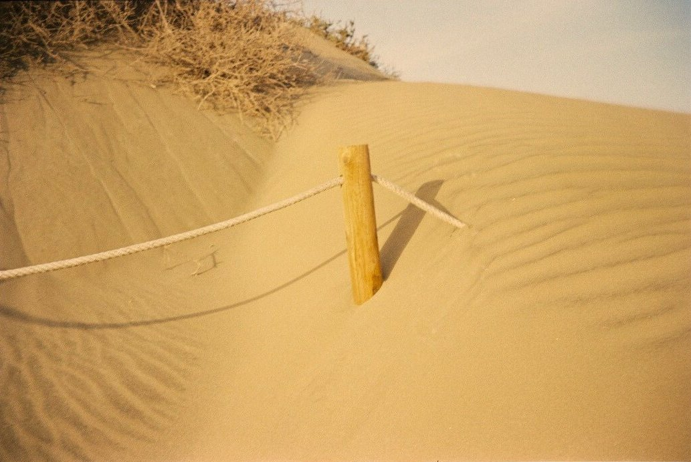
turistas y trabajadores parecían por fin entenderse en el campo de batalla gracias a este calor tóxico que se cuela por el tejido de la ropa e irrita los ojos.
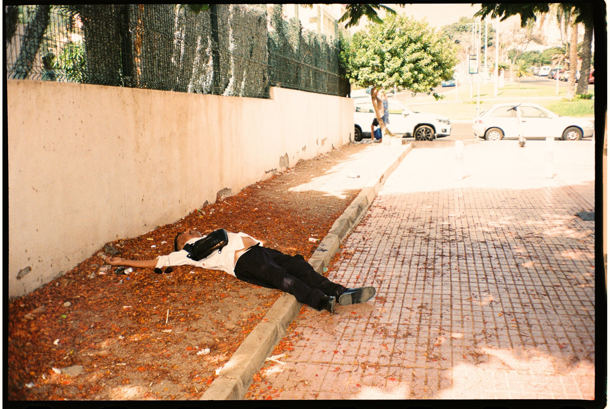

incluso en la noche, cuando las temperaturas se estabilizan, la sequía y el sudor son el leit motiv para quien se aventura a vivir sobre el volcán.
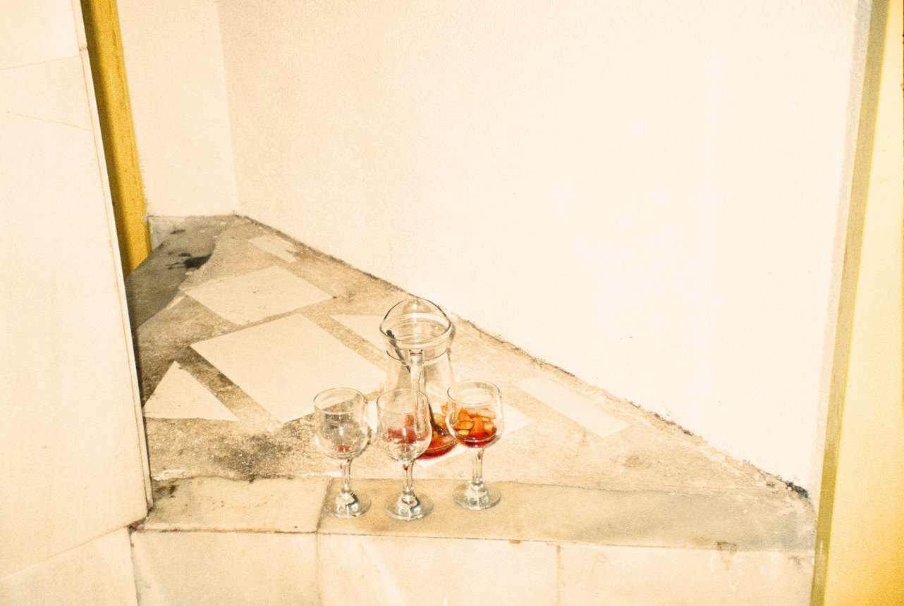


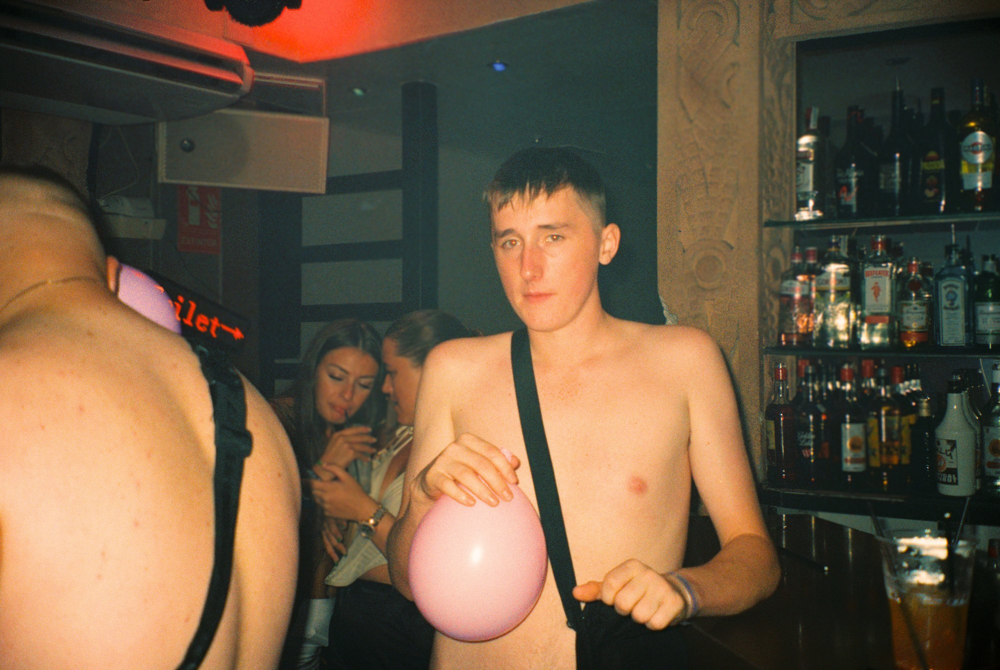
la calima intenta decir algo.

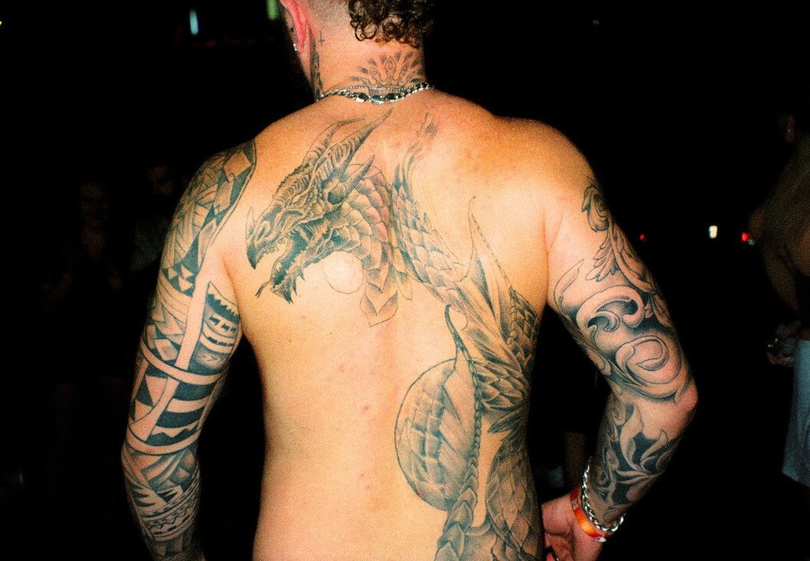

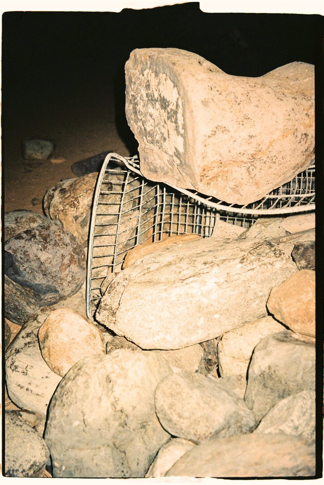
cuando la nube de polvo aparezca en el horizonte engullendo los yates y cegando a los vendedores de hachís de la rambla de Adeje recuérdalo: es el momento,
sube a tu moto de agua y abandona el archipiélago.
la calima desaparecerá después de varios días.
para entonces, todo habrá cambiado.
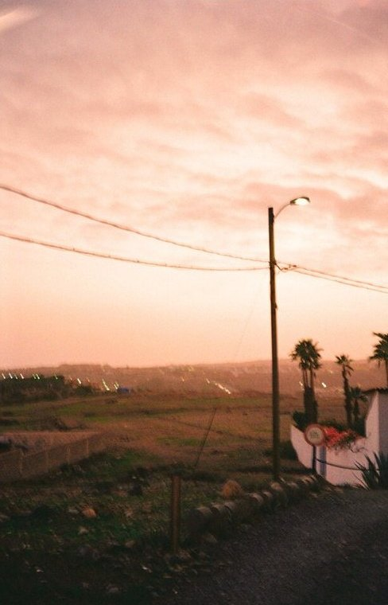
¿Te interesa una copia?
Una selección de las fotografías de esta galería está disponible en copia fine art, firmada y numerada. Ver las copias fine art →